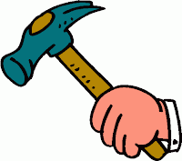

How Do YOU Want To Be Treated?
*Disclaimer: any resemblance to actual characters or facts is just a coincidence. This post does not discuss a specific person of event but *
rather tries to underline the idea that people need to be treated with respect, regardless of their position.
Let's start by sharing a link: the ethic of reciprocity summarised in a well known phrase, rooted in the culture of many people: "do to others what you would like to be done to you" or, as it is known across the globe, "The Golden Rule".
Some managers may forget it, being blinded by their function, so they start patronising their subordinates. Others, probably driven either by incomprehension of their role - to service the team to do its job - or a sense of insecurity, position themselves too far from their people thus impeding informal communication or, even worse, rely solely on the argument of hierarchy to force the completion of their goals (instead of discussing personally and try to find mutual understanding). Don't worry! If the team doesn't tell you stuff, they will share it among themselves, behind your back :). I personally don't like hearing words like "subordinate", supervisor" or "hierarchy" when it comes to me and my men. It's not that I am an anarchist of some kind - far from me that thought - but in many ways I find them to be a relic of the past, of times when people were considered brute work force, with no rights and no dignity. Basic needs include food, water, a shelter and security but, right after that comes dignity. Every person needs to be treated with respect and be given a private space to react and sustain his ideas even during an argument. This is actually the reason why negative feedback should be kept private. I find it outrageous when a manager calls his team "a bunch of thick skins" or other names, either in private or in public. He should, under all circumstances, refrain from such judgements.

How I want to be treated by my supervisor is how I expect that I, in turn, treat my team and my team treats me in return - as partners. Me with my responsibilities, him / they with his / theirs. We are all here to build great products for our customers so we are sailing in the same boat, as they say. We should understand and respect each other's responsibilities and act accordingly. I don't mind being guided and shown what and why we go in a certain way but I do mind being patronised. I do mind if I am treated as an inferior being instead of being respected for who I am, for what I stand for and for what I do. I do mind if I'm being dismissed without first being listened or not be given a chance to speak my mind. I do mind also if my values are treated with disregard. Never forget that almost every human on Earth wants to be appreciated for his right judgement and I am no different - and chances are that neither are you! Even more, I consider myself a trained specialist, with something valuable to say. I want to be able to express my personality and have the space to manifest my ideas and thoughts especially because I believe that my greatest asset is my mind - that's why they hired me in the first place, right? Who am I? I'm not only Alexandru; these needs are not only mine, they are universal. So, don't forget:
PARTNERS: your boss, your colleagues, your team!**Comment:
Some people may argue that not all men/women are the same in what they want*and not every one expects to be treated the same way or have the same values as another one has. Totally true and this is precisely why I feel that*my argument is solid. One of the first duties of a manager is to adapt his communication style to each of his team members as he, in turn, expects the same thing from his manager too - adaptability, respect, cherish diversity of thought.